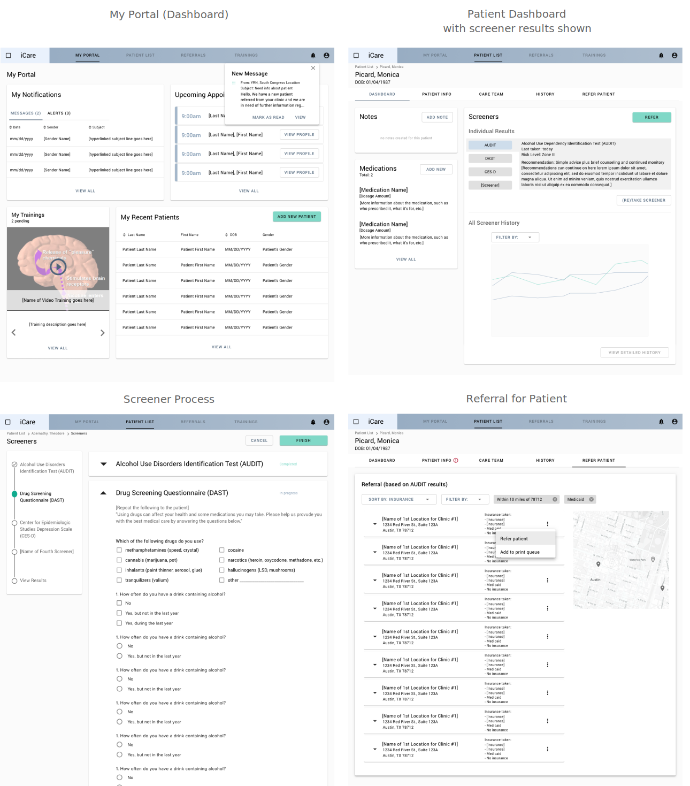

Process

Initial Design Work
Kickoff Meeting
The project started with a kickoff meeting, where Dr. Kasey Claborn and Avani Jhaveri from the Dell Medical School explained that they were in the last year of a grant they had received, and they had used most of the grant money to build the system already. Their problem was that the app that had been created did not test well with clinics, and clinicians were hesitant to use it. Therefore, the Dell Med team needed our help to start the design of the project from scratch and incorporate iterative user testing into our process to ensure that clinicians would want to adopt the system once the pilot version was released.
Determining the Information Architecture
Initial Mockups
We sketched out a rudimentary information architecture at the kickoff meeting to ensure that we were on the same page as the Dell Medical team. Using this IA, I created the initial low-fidelity mockups to present back to the Dell Medical team and start gaining feedback from them.

Medium-Fidelity Mockups and IA
After presenting the lo-fi mockups to the Dell Med team, I made some adjustments to the IA and started to include more details on the features we had discussed. The My Portal and Patient Dashboard pages have constantly changed throughout the project, but at this stage, one of the biggest changes was the decision to make the Referrals process into a step-by-step process much like the Screener process, as evidenced by the addition of the progress bar.

After receiving more information about the extent of the features that the app would include, a second designer (Erin) was brought on to help with the UX. Additionally, we looped in the UX researcher (Sara) as a regular participant in the design meetings. To help communicate the complexity of the app's feature set as well as document any changes to the IA, I created a diagram of the information architecture as a reference.

Once the IA had been decided, it made it easier for us to divvy up the design work yet remain on the same page. We regularly communicated the interoperability of features and pages by meeting at least a couple of times a week and using Abstract for version control.
Brand and Visual Identity
Developing a Design System
At this point, we decided to create a design system to use for the high-fidelity mockups. Erin Finley took the lead on this, creating the bulk of the framework such as button stylings, best practices for color usage, typography, icons, navigation elements, and more.
My contribution was the redesign of a few design patterns to make them more mobile-friendly, since the Dell Medical School team had written into a grant that they would also be using tablets for this system. The design patterns that I redesigned were the filters, the pagination, and the progress bar for the screener pages. I also added other components as needed, such as a banner notification, a dropdown row for the Referrals screens, and a few icons (pulled from Material Design).
Refinement of Design
High-Fidelity Prototype

RITE Testing
Key Findings
Users were asked to complete two task-based scenarios using the prototype, which received average scores of 4.75/5 on a Likert Scale (1: Very Difficult, 5: Very Easy):
- Task 1: You have a new patient named Theodore Abernathy that has come in for an appointment. You need to administer 4 screeners to Theodore and then refer him based on the results of the screener.
- Task 2: Click on the iCare logo in the upper left-hand corner to return to your portal. You have an existing patient named Monica Picard and it’s been a while since you’ve last seen her. Go to her file in the iCare system to find more information on her.
To view a PDF of user feedback from the RITE testing, click here.
Overall, the usability tests showed that clinicians were interested in the app, which was a major change from the original app the Dell Med team had before our design. Changes made based on feedback from RITE testing are discussed in the next section.
Final Design
My Portal
Patient Dashboard and Information
Screener Process
Patient Referral Process
Patient Treatment History

Impact
During testing, several participants commented on how they liked iCare more than their EHR system. The Dell Medical team had already thought that the new design of the application had potential for use beyond mental health and substance misuse treatment, and such feedback validated the idea. The potential for impact was also recognized by the Texas Targeted Opioid Response (TTOR) Grant Program, who awarded the team a multi-year $2 million grant in early 2019 to continue the project.
You can read more about this project by viewing this article.
You can view the InVision prototype by clicking here.